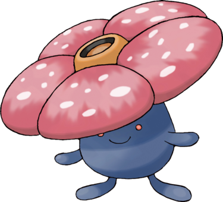

Rafflesia ressemble à la plus grande fleur du monde, la Rafflesie. Située au sommet de sa tête, elle est composée de cinq larges pétales rouges tachetés de blanc, avec un tube orange en leur centre. Elle dégage d'ailleurs une horrible odeur de viande périmée. L'immense fleur cache un corps cylindrique bleu avec deux courts bras et pieds, deux yeux rouges et une bouche.